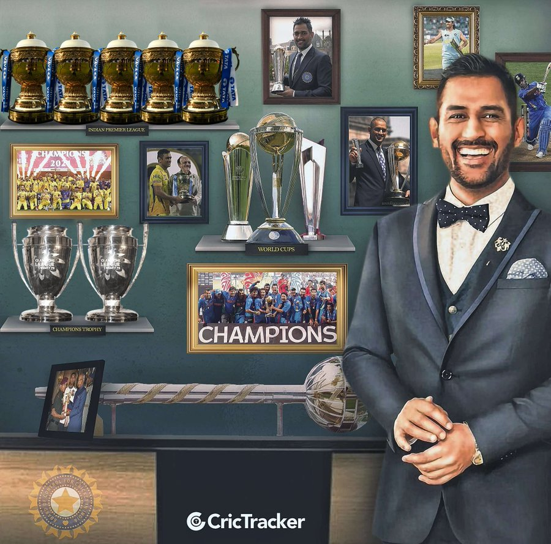

꧁༒☬𝓜𝓢 𝓓𝓱𝓸𝓷𝓲☬༒꧂

𝐌.𝐒. 𝐃𝐡𝐨𝐧𝐢, 𝐢𝐧 𝐟𝐮𝐥𝐥 𝐌𝐚𝐡𝐞𝐧𝐝𝐫𝐚 ğ’ğ¢ğ§ğ ğ¡ 𝐃𝐡𝐨𝐧𝐢, (𝐛𝐨𝐫𝐧 𝐉𝐮𝐥𝐲 𝟕, 𝟏𝟗𝟖𝟏, 𝐑𝐚𝐧𝐜𝐡𝐢, 𝐁𝐢𝐡𝐚𝐫 [𝐧𝐨𝐰 𝐉𝐡𝐚𝐫𝐤𝐡𝐚𝐧𝐝] ğ¬ğğšğğ, 𝐈𝐧𝐝𝐢𝐚), 𝐈𝐧𝐝𝐢𝐚𝐧 ğœğ«ğ¢ğœğ¤ğğğğ« 𝐰𝐡𝐨𝐬𝐞 𝐫𝐢𝐬𝐞 ğğ¨ 𝐩𝐫𝐨𝐦𝐢𝐧𝐞𝐧𝐜𝐞 𝐢𝐧 ğğ¡ğ 𝐞𝐚𝐫𝐥𝐲 ğŸğŸğ¬ğ ğœğğ§ğğ®ğ«ğ² ğœğ®ğ¥ğ¦ğ¢ğ§ğšğğğ 𝐢𝐧 𝐡𝐢𝐬 ğœğšğ©ğğšğ¢ğ§ğœğ² 𝐨𝐟 ğğ¡ğ 𝐈𝐧𝐝𝐢𝐚𝐧 ğ§ğšğğ¢ğ¨ğ§ğšğ¥ ğğğšğ¦ ğğ¡ğšğ 𝐰𝐨𝐧 ğğ¡ğ 𝐨𝐧𝐞-𝐝𝐚𝐲 ğ‚ğ«ğ¢ğœğ¤ğğ 𝐖𝐨𝐫𝐥𝐝 𝐂𝐮𝐩 𝐢𝐧 𝟐𝟎𝟏𝟏.
(¯´•._.• Ｗｈｏ ｉｓ ï¼ï½“ Ｄｈｏｎｉ •._.•´¯)?
☛ Mahendra Singh Dhoni (/məˈheɪndrə ˈsɪŋ dhæˈnɪ/ (listen); born 7 July 1981) is an Indian professional cricketer. He was captain of the Indian national team in limited-overs formats from 2007 to 2017 and in Test cricket from 2008 to 2014. Dhoni is widely considered one of the greatest cricket captains, wicket-keeper-batsman and finishers in the history of cricket.[a] He plays as a right-handed wicket-keeper-batsman and is known for his calm captaincy and his ability to finish matches in tight situations. He is also the current captain of Chennai Super Kings in the Indian Premier League.
☛Born in Ranchi, Bihar (now in Jharkhand),[8][9] His exceptional wicketkeeping skills allowed him to become the regular wicketkeeper at the Commando Cricket Club (1995–1998), he was picked for the 1997/98 season Vinoo Mankad Trophy Under-16 Championship, where he performed well.[10] From 2001 to 2003, He worked as a Travelling Ticket Examiner at Kharagpur railway station under South Eastern Railway in Midnapore, in West Bengal.[11][12] In Indian domestic cricket he played for Bihar and then for Jharkhand Cricket team. Dhoni's performance in the 2002–03 season included three half-centuries in the Ranji Trophy and a couple of half-centuries in the Deodhar Trophy, as he started gaining recognition for his lower-order contribution as well as hard-hitting batting style.
☛Dhoni made his ODI debut on 23 December 2004, against Bangladesh in Chittagong,[13] and played his first Test a year later against Sri Lanka.[14] He played his first T20I also a year later against South Africa.[15] In 2007, he took over the ODI captaincy from Rahul Dravid and he also selected as T20I captain of India in this year.[16] In 2008, he was selected as Test captain.[17] His captaincy record in Tests format was mixed, successfully leading India to a series win against New Zealand in 2008 and the Border-Gavaskar Trophy (home series in 2010 and 2013) against Australia.[18] In other formats, Dhoni is the first cricketer to be a winning captain of all three major ICC trophies, as under his captaincy, India won the 2007 ICC World Twenty20, the 2011 Cricket World Cup, and the 2013 ICC Champions Trophy, the most by any captain. He also led India to victory in the 2010 and 2016 Asia Cup. Additionally, under his leadership, India won the 2010 and 2011 ICC Test Mace and 2013 ICC ODI Championship. He has scored 17,266 runs in International Cricket (including 10,000 plus runs in ODI Internationals).
for more information
click here